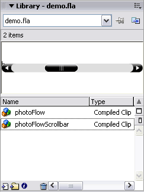
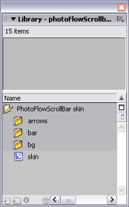
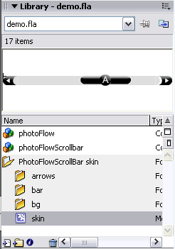
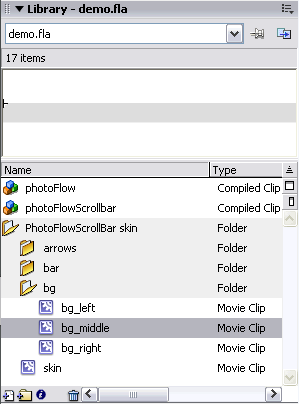
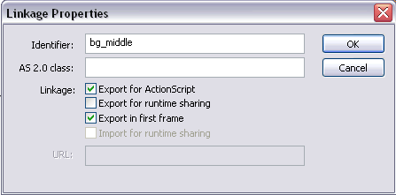
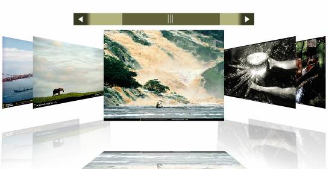

This explains how to skin the photoFlowScrollbar.
1. Open your Flash file that contains your project using the photoFlow and photoFlowScrollBar.
2. Press Ctr+L (Win) or Cmnd+L (Mac) to open the Library panel.

3. From the menu in Flash, select Window > Common Libraries > photoFlowScrollBar skin in order to open the skin library.

4. Drag the photoFlowScrollBar skin folder from the common library into the library of your current Flash file that you opened in step 2. You may now close the common library as you will only be working with the library in your current Flash file.

5. Ensure that you are viewing the library of the current Flash file. To change the background color of the scrollbar, double click on the bg folder to open it and double click on the bg_middle movie clip to edit it.

6. Change the rectangle of the bg_middle movie clip to other color. You can then return to the main timeline.
7. Right click on the bg_middle movie clip that's in the Library and select linkage from the menu. Check Export for first frame and press OK.

8. Press Ctrl+Enter (Win) or Cmnd+Enter (Mac) to test your Flash file. You should see that the scrollbar background color has changed to the color that you selected.
Repeat this process from step 5 in order to edit the other asset of the scrollbar.
A demo containing a customized scrollbar is included with your dowload.
